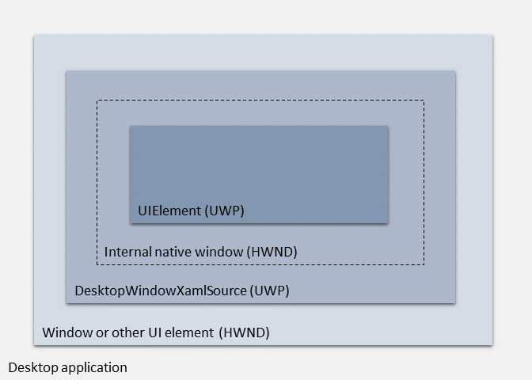

Using the WinRT XAML hosting API in a C++ desktop (Win32) app
Important
This topic uses or mentions types from the CommunityToolkit/Microsoft.Toolkit.Win32 GitHub repo. For important info about XAML Islands support, please see the XAML Islands Notice in that repo.
Starting in Windows 10, version 1903, non-UWP desktop apps (including C++ desktop (Win32), WPF, and Windows Forms apps) can use the WinRT XAML hosting API to host WinRT XAML controls in any UI element that is associated with a window handle (HWND). This API enables non-UWP desktop apps to use the latest Windows UI features that are only available via WinRT XAML controls. For example, non-UWP desktop apps can use this API to host WinRT XAML controls that use the Fluent Design System and support Windows Ink.
The WinRT XAML hosting API provides the foundation for a broader set of controls that we are providing to enable developers to bring Fluent UI to non-UWP desktop apps. This feature is called XAML Islands. For an overview of this feature, see Host WinRT XAML controls in desktop apps (XAML Islands).
Note
If you have feedback about XAML Islands, create a new issue in the Microsoft.Toolkit.Win32 repo and leave your comments there.
Is the WinRT XAML hosting API the right choice for your desktop app?
The WinRT XAML hosting API provides the low-level infrastructure for hosting WinRT XAML controls in desktop apps. Some types of desktop apps have the option of using alternative, more convenient APIs to accomplish this goal.
If you have a C++ desktop app and you want to host WinRT XAML controls in your app, you must use the WinRT XAML hosting API. There are no alternatives for these types of apps.
For WPF and Windows Forms apps, we strongly recommend that you use the XAML Island .NET controls in the Windows Community Toolkit instead of using the WinRT XAML hosting API directly. These controls use the WinRT XAML hosting API internally and implement all of the behavior you would otherwise need to handle yourself if you used the WinRT XAML hosting API directly, including keyboard navigation and layout changes.
Because we recommend that only C++ desktop apps use the WinRT XAML hosting API, this article primarily provides instructions and examples for C++ desktop apps. However, you can use the WinRT XAML hosting API in WPF and Windows Forms apps if you choose. This article points to relevant source code for the host controls for WPF and Windows Forms in the Windows Community Toolkit so you can see how the WinRT XAML hosting API is used by those controls.
Learn how to use the XAML Hosting API
To follow step-by-step instructions with code examples for using the XAML Hosting API in C++ desktop apps, see these articles:
Samples
The way you use the WinRT XAML hosting API in your code depends on your app type, the design of your app, and other factors. To help illustrate how to use this API in the context of a complete app, this article refers to code from the following samples.
C++ desktop (Win32)
The following samples demonstrate how to use the WinRT XAML hosting API in a C++ desktop app:
Simple XAML Island sample. This sample demonstrates a basic implementation of hosting a WinRT XAML control in an unpackaged C++ desktop app.
XAML Island with custom control sample. This sample demonstrates a complete implementation of hosting a custom WinRT XAML control in a packaged C++ desktop app, as well as handling other behavior such as keyboard input and focus navigation.
WPF and Windows Forms
The WindowsXamlHost control in the Windows Community Toolkit serves as a reference sample for using the WinRT XAML hosting API in WPF and Windows Forms apps. The source code is available at the following locations:
For the WPF version of the control, go here. The WPF version derives from System.Windows.Interop.HwndHost.
For the Windows Forms version of the control, go here. The Windows Forms version derives from System.Windows.Forms.Control.
Note
We strongly recommend that you use the XAML Island .NET controls in the Windows Community Toolkit instead of using the WinRT XAML hosting API directly in WPF and Windows Forms apps. The WPF and Windows Forms sample links in this article are for illustrative purposes only.
Architecture of the API
The WinRT XAML hosting API includes these main Windows Runtime types and COM interfaces.
| Type or interface | Description |
|---|---|
| WindowsXamlManager | This class represents the UWP XAML framework. This class provides a single static InitializeForCurrentThread method that initializes the UWP XAML framework on the current thread in the desktop app. |
| DesktopWindowXamlSource | This class represents an instance of UWP XAML content that you are hosting in your desktop app. The most important member of this class is the Content property. You assign this property to a Windows.UI.Xaml.UIElement that you want to host. This class also has other members for routing keyboard focus navigation into and out of the XAML Islands. |
| IDesktopWindowXamlSourceNative | This COM interface provides the AttachToWindow method, which you use to attach a XAML Island in your app to a parent UI element. Every DesktopWindowXamlSource object implements this interface. |
| IDesktopWindowXamlSourceNative2 | This COM interface provides the PreTranslateMessage method, which enables the UWP XAML framework to process certain Windows messages correctly. Every DesktopWindowXamlSource object implements this interface. |
The following diagram illustrates the hierarchy of objects in a XAML Island that is hosted in a desktop app.
At the base level is the UI element in your app where you want to host the XAML Island. This UI element must have a window handle (HWND). Examples of UI elements in which you can host a XAML Island include a window for C++ desktop apps, a System.Windows.Interop.HwndHost for WPF apps, and a System.Windows.Forms.Control for Windows Forms apps.
At the next level is a DesktopWindowXamlSource object. This object provides the infrastructure for hosting the XAML Island. Your code is responsible for creating this object and attaching it to the parent UI element.
When you create a DesktopWindowXamlSource, this object automatically creates a native child window to host your WinRT XAML control. This native child window is mostly abstracted away from your code, but you can access its handle (HWND) if necessary.
Finally, at the top level is the WinRT XAML control you want to host in your desktop app. This can be any UWP object that derives from Windows.UI.Xaml.UIElement, including any WinRT XAML control provided by the Windows SDK as well as custom user controls.

Note
When you host XAML Islands in a desktop app, you can have multiple trees of XAML content running on the same thread at the same time. To access the root element of a tree of XAML content in a XAML Island and get related information about the context in which it is hosted, use the XamlRoot class. The CoreWindow, ApplicationView, and Window APIs won't provide the correct information for XAML Islands. For more information, see this section.
Best practices
When using the WinRT XAML hosting API, follow these best practices for each thread that hosts WinRT XAML controls:
- Create a dedicated WindowsXamlManager for the thread.
- For each WinRT XAML control you want to host, create a DesktopWindowXamlSource.
- Destroy each DesktopWindowXamlSource after it is no longer needed.
- Before exiting the thread, destroy the dedicated WindowsXamlManager for the thread. Note that destruction of this WindowsXamlManager is asynchronous, and requires draining the Windows message queue before exiting the thread. For examples of how to do this, see the XAML Islands samples.
- After destroying the WindowsXamlManager for a given thread, creating a new WindowsXamlManager on the same thread is not supported and will result in unpredictable behavior.
Troubleshooting
Error using WinRT XAML hosting API in a UWP app
| Issue | Resolution |
|---|---|
| Your app receives a COMException with the following message: "Cannot activate DesktopWindowXamlSource. This type cannot be used in a UWP app." or "Cannot activate WindowsXamlManager. This type cannot be used in a UWP app." | This error indicates you are trying to use the WinRT XAML hosting API (specifically, you are trying to instantiate the DesktopWindowXamlSource or WindowsXamlManager types) in a UWP app. The WinRT XAML hosting API is only intended to be used in non-UWP desktop apps, such as WPF, Windows Forms, and C++ desktop applications. |
Error trying to use the WindowsXamlManager or DesktopWindowXamlSource types
| Issue | Resolution |
|---|---|
| Your app receives an exception with the following message: "WindowsXamlManager and DesktopWindowXamlSource are supported for apps targeting Windows version 10.0.18226.0 and later. Please check either the application manifest or package manifest and ensure the MaxTestedVersion property is updated." | This error indicates that your application tried to use the WindowsXamlManager or DesktopWindowXamlSource types in the WinRT XAML hosting API, but the OS can't determine whether the app was built to target Windows 10, version 1903 or later. The WinRT XAML hosting API was first introduced as a preview in an earlier version of Windows 10, but it is only supported starting in Windows 10, version 1903.To resolve this issue, either create an MSIX package for the app and run it from the package, or install the Microsoft.Toolkit.Win32.UI.SDK NuGet package in your project. |
Error attaching to a window on a different thread
| Issue | Resolution |
|---|---|
| Your app receives a COMException with the following message: "AttachToWindow method failed because the specified HWND was created on a different thread." | This error indicates that your application called the IDesktopWindowXamlSourceNative::AttachToWindow method and passed it the HWND of a window that was created on a different thread. You must pass this method the HWND of a window that was created on the same thread as the code from which you are calling the method. |
Error attaching to a window on a different top-level window
| Issue | Resolution |
|---|---|
| Your app receives a COMException with the following message: "AttachToWindow method failed because the specified HWND descends from a different top-level window than the HWND that was previously passed to AttachToWindow on the same thread." | This error indicates that your application called the IDesktopWindowXamlSourceNative::AttachToWindow method and passed it the HWND of a window that descends from a different top-level window than a window you specified in a previous call to this method on the same thread.After your application calls AttachToWindow on a particular thread, all other DesktopWindowXamlSource objects on the same thread can only attach to windows that are descendants of the same top-level window that was passed in the first call to AttachToWindow. When all the DesktopWindowXamlSource objects are closed for a particular thread, the next DesktopWindowXamlSource is then free to attach to any window again.To resolve this issue, either close all DesktopWindowXamlSource objects that are bound to other top-level windows on this thread, or create a new thread for this DesktopWindowXamlSource. |